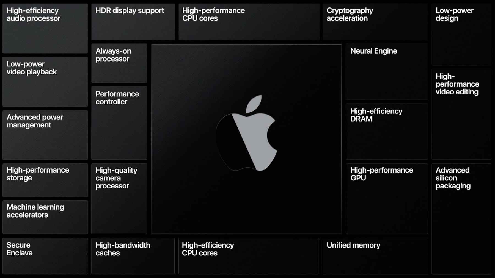
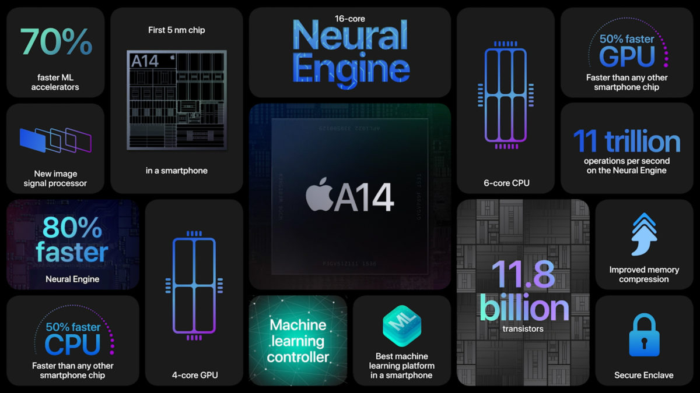
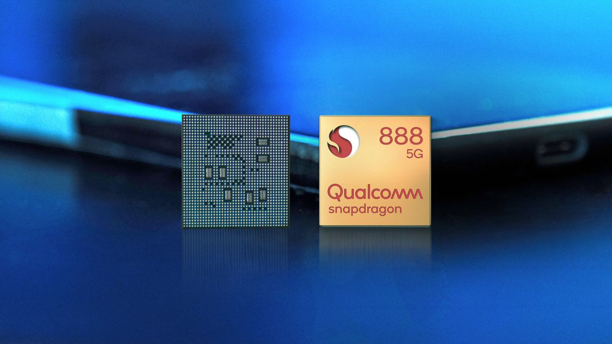

Мобильные процессоры
В класс мобильных процессоров входят две наиболее популярные модели, использующиеся в различных устройствах.
- Apple Silicon
- Qualcomm Snapdragon
Где Apple Silicon стоит только в девайсах от компании Apple соответственно, а вот Qualcomm Snapdragon уже в огромном множестве смартфонов на базе ОС Android.
Процессоры Apple
Apple Silicon (ранее Apple Ax) — серия систем на кристалле (СнК, SoC), используемых в компьютерных устройствах компании Apple: мобильных (iPhone, iPad, iPod, Apple Watch), телевизионной приставке Apple TV и компьютерах Mac. В этих системах используются микропроцессорные ядра с архитектурой ARM. Старший вице-президент Apple Inc по аппаратным технологиям Джони Сруджи с 2008 года возглавляет разработку и проектирование микропроцессоров серии Apple Ax. C 10 ноября 2020 года компания Apple начала переход на процессоры Apple Silicon вместо Intel в компьютерах Mac.
Первым процессором линейки Apple A-серии был представлен Apple A4. Apple A4 представляет собой 32-разрядную систему на кристалле (PoP) system-on-a-chip (SoC), разработан Apple Inc. и произведен компанией Samsung. Он сочетает в себе процессор ARM Cortex-A8 с графическим процессором PowerVR и делает акцент на энергоэффективность. Был представлен 3 апреля 2010 года при релизе iPad 1 — го поколения. Пакет данного процессора не содержит ОЗУ, но поддерживает установку. Начало поддержки iOS — iOS 4. Обновления программного обеспечения для устройств, использующих этот чип прекратилось в 2014 году, с выходом iOS 8. Производство продолжалось с 3 апреля 2010 года по 10 сентября 2013 года. Начиная с этого процессора, компания Apple отказалась от процессоров сторонних компаний.
По прошествии многих лет, Apple продолжает выпускать свои устройства с процессорами Apple A внутри. Так в 2020 г. на презентации своей презентации Apple представила новый чип Apple A14 Bionic. Apple A14 Bionic – ARM-система на кристалле (SoC), разработан Apple и изготовлен TSMC впервые по 5 нм техпроцессу. Cочетает в себе процессоры Firestorm и Icestorm с графическим процессором Apple GPU
Чип A14 изготовлен TSMC впервые в мире используя для ARM 5 нм техпроцесс. Содержит 11,8 миллиардов транзисторов, что больше на 40%, чем в A13 ( 8,5 млрд ). Поддерживает ARMv8.4 набор инструкций, что положительно влияет на безопасность. Помимо уменьшенного техпроцесса до рекордных размеров, Apple также впервые внедрила технологию 5G, что дает более высокую пропускную способность, меньшее время задержки, скорость интернета до 2 Гбит/с, и уменьшенный расход энергии.
Очередная система на кристалле от Apple оснащена 6-ю ядрами, двумя высокопроизводительными ядрами, работающими на частоте 3,1 ГГц под названием Firestorm и четырьмя энергоэффективными ядрами под названием Icestorm работающими на частоте 1,8 ГГц.
Основана работа ядер на технологии big.LITTLE – это технология объединия в одном кристале двух типов ARM-ядер. Четыре ядра Icestorm предназначены для обычных задач и основаны на доработанных компанией быстрых ядрах от Apple A6. Оставшиеся два ядра необходимы для более сложных задач, где необходима максимальная мощь. Начало поддержки iOS — iOS 14.1. Обновления программного обеспечения для систем, использующих этот чип продолжается до сих пор. Производство продолжается с 2020 года по настоящее время.
Qualcomm Snapdragon
Snapdragon (с англ. — «Львиный зев» - род травянистых растений с красивыми цветками) — семейство мобильных систем на кристалле (SoC) компании Qualcomm. Включают процессоры, базирующиеся на архитектуре ARM, и ряд модулей связи. Линейка позиционируется как платформа для смартфонов и планшетов (изначально также для смартбуков)
Семейство составляет множество чипсетов, которые разделены на две ветки поколений серий[1]: S1/S2/S3/S4 и 2xx/4xx/6xx/7xx/8xx.
Поколения
- Поколение S1 (2007) использует одноядерные CPU Scorpion, разработанные Qualcomm на основе доработанной архитектуры Cortex-A8 c частотой до 1 ГГц или ARM11 с частотой до 600 МГц. Процессоры используют набор инструкций ARMv7 и ARMv6. Кроме того, в S1 используются графическое ядро Qualcomm Adreno вплоть до Adreno 200. Поддерживается запись и воcпроизведение HD-видео 720p, камера до 12 мегапикселей, Wi-Fi, Bluetooth, память DDR1 и другое. В поколение S1 входят микросхемы: QSD8650, QSD8250, MSM7627, MSM7227, MSM7625, MSM7225.
- Поколение S2 (2010) использует одноядерные CPU Scorpion с частотой до 1,9 ГГц с набором инструкций ARMv7, GPU Adreno 205, поддерживают память DDR2. В поколение S2 входят микросхемы: MSM8655, MSM8255, APQ8055, MSM7630, MSM7230.
- Поколение S3 (2011) содержит двухъядерные CPU Scorpion с частотой до 1,7 ГГц (на основе ARM Cortex-A9) с набором инструкций ARMv7, GPU Adreno 220. Поддерживает фотокамеры до 16 мегапикселей, запись и воспроизведение видео качества до 1080p, съёмка 3D. В поколение S3 входят микросхемы: MSM8660, MSM8260, APQ8060.
- Поколение S4 (2012) представлено двух- и четырёхъядерными CPU Qualcomm под названием «Krait» с набором инструкций ARMv7. Микросхемы S4 включают в себя 2 или 4 CPU Krait, GPU Adreno 225, 305, 320 или 330, встроенный многорежимный (2G/3G/4G) модем, модули GPS, Wi-Fi, Bluetooth 4.0, FM и другие компоненты. Поддерживаются 3 камеры до 20 мегапикселей, запись и воспроизведение видео 1080p, съёмка 3D. Впервые используется 28-нм процесс для производства чипсетов, использующих набор инструкций ARMv7. В S4 входят микросхемы: APQ8064, APQ8064T, APQ8060A, MSM8960, MSM8660A, MSM8260A, APQ8030, MSM8930, MSM8630, MSM8230, MSM8627, MSM8227, MSM8625, MSM8225. В некоторых процессорах поколения S4 вместо CPU «Krait» используются CPU Cortex-A5, произведённые по технологии 45 нм.
- В январе 2013 года компания Qualcomm предложила новую классификацию своих продуктов: Snapdragon 200, 400, 600, 700 и 800. Данные серии включили в себя как актуальные продукты, так и новые, готовящиеся к выходу.
Достойные упоминания
Samsung Exýnos. Cемейство ARM-микропроцессоров компании Samsung Electronics, представляющих собой Систему на кристалле. Устройства на базе Exynos имеют более продвинутый диспетчер приложений и алгоритмы управления активностью этих самых приложений. В среднем при одинаковом сценарии использования устройство на процессоре Exynos «живет» на 5-10% дольше своего собрата на процессоре Snapdragon. Речь, конечно же, идет про устройства одной линейки и одного поколения. Особенно это становится заметно при нахождении в зоне неуверенного приема сети.
HiSilicon K3. Cемейство мобильных систем на кристалле (SoC) компании HiSilicon. Включает процессоры, базирующиеся на архитектуре ARM. HiSilicon Technologies, ещё будучи специализированным подразделением по разработке дизайна интегральных микросхем было сформировано в корпорации Huawei в 1991 году. В 2004 году, став самостоятельной компанией и получив лицензии британской фирмы ARM, HiSilicon приступил к созданию собственного RISC-процессора K3. Лицензионные соглашения на использование архитектур графических процессоров с тремя основными инжиниринговыми компаниями (ARM, Imagination Technologies и Vivante), специализирующимися на GPU в ARM-системах, позволяют HiSilicon разрабатывать высокоэффективные мобильные процессоры.